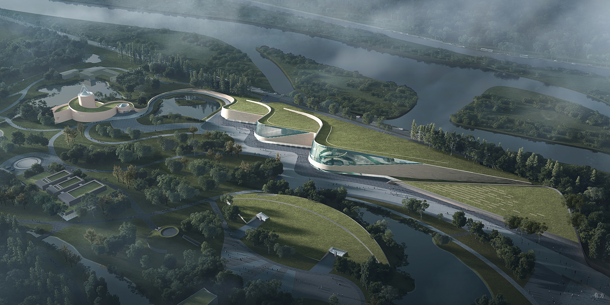

Plan Your Visit
Welcome to the Sanxingdui Museum. We're excited to share with you the wonders of ancient Shu civilization. Here's everything you need to know to plan your visit.
Opening Hours
Monday - Sunday: 8:30 AM - 6:00 PM
Last admission: 5:00 PM
Closed on New Year's Eve
Admission Fees
Adults: ¥72
Students (with valid ID): ¥36
Children (Height less than 1.3 meters): Free
Disabled People, Seniors (60+): Free
Guided Tours
Daily tours in Chinese: 8:30 AM, 1:00 PM
English tours: Wednesday, Saturday at 11:00 AM
Tour duration: Approximately 90 minutes
Additional fee: ¥30 per person
Location
The Sanxingdui Museum is located in Guanghan, Sichuan Province, China.
Address: 2 Yueliangwan Road, Guanghan, Sichuan Province, 618300, China
By Car
From Chengdu, take the G5 Jingkun Expressway north towards Guanghan. Exit at Guanghan and follow signs to the Sanxingdui Museum. The journey takes approximately 40 minutes.
By Public Transportation
Take the high-speed train from Chengdu East Railway Station to Guanghan North Station. From there, take bus line 6 to the Sanxingdui Museum stop. The entire journey takes about 1 hour.
Accessibility
Sanxingdui Museum is committed to providing accessibility for all visitors. We offer:
- Wheelchair accessible entrances and elevators
- Free wheelchair rentals (subject to availability)
- Accessible restrooms
- Large print guides and braille materials upon request
For specific accessibility requests or questions, please contact us in advance of your visit.
Museum Rules
- Photography is allowed in most areas, but flash photography is prohibited
- Food and drinks are not permitted in the exhibition areas
- Please do not touch the exhibits unless explicitly invited to do so
- Large bags and backpacks must be stored in the provided lockers
- Smoking is strictly prohibited throughout the museum